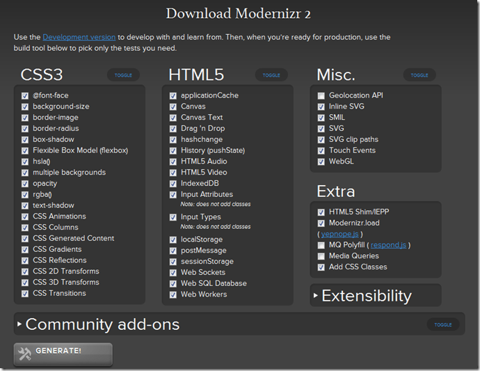

the link of articles
HTML5, CSS3, and related technologies such as canvas and web sockets bring a lot of useful new features to the table that can take Web applications to the next level. These new technologies allow applications to be built using only HTML, CSS, and JavaScript allowing them to be viewed on a variety of form factors including tablets and phones. Although HTML5 features offer a lot of promise, it’s not realistic to develop applications using the latest technologies without worrying about supporting older browsers in the process. If history has taught us anything it’s that old browsers stick around for years and years which means developers have to deal with backward compatibility issues. This is especially true when deploying applications to the Internet that target the general public. This begs the question, “How do you move forward with HTML5 and CSS3 technologies while gracefully handling unsupported features in older browsers?”
Although you can write code by hand to detect different HTML5 and CSS3 features, it’s not always straightforward. For example, to check for canvas support you need to write code similar to the following:
If you want to check for local storage support the following check can be made. It’s more involved than it should be due to a bug in older versions of Firefox.
Looking through the previous examples you can see that there’s more than meets the eye when it comes to checking browsers for HTML5 and CSS3 features. It takes a lot of work to test every possible scenario and every version of a given browser. Fortunately, you don’t have to resort to writing custom code to test what HTML5/CSS3 features a given browser supports. By using a script library called Modernizr you can add checks for different HTML5/CSS3 features into your pages with a minimal amount of code on your part. Let’s take a look at some of the key features Modernizr offers.
Getting Started with Modernizr
The first time I heard the name “Modernizr” I thought it “modernized” older browsers by added missing functionality. In reality, Modernizr doesn’t actually handle adding missing features or “modernizing” older browsers. The Modernizr website states, “The name Modernizr actually stems from the goal of modernizing our development practices (and ourselves)”. Because it relies on feature detection rather than browser sniffing (a common technique used in the past – that never worked that great), Modernizr definitely provides a more modern way to test features that a browser supports and can even handle loading additional scripts called shims or polyfills that fill in holes that older browsers may have. It’s a great tool to have in your arsenal if you’re a web developer.
Modernizr is available at http://modernizr.com. Two different types of scripts are available including a development script and custom production script. To generate a production script, the site provides a custom script generation tool rather than providing a single script that has everything under the sun for HTML5/CSS3 feature detection. Using the script generation tool you can pick the specific test functionality that you need and ignore everything that you don’t need. That way the script is kept as small as possible. An example of the custom script download screen is shown next. Notice that specific CSS3, HTML5, and related feature tests can be selected.
image

Once you’ve downloaded your custom script you can add it into your web page using the standard
Modernizr and the HTML Element
Once you’ve add a script reference to Modernizr in a page it’ll go to work for you immediately. In fact, by adding the script several different CSS classes will be added to the page’s element at runtime. These classes define what features the browser supports and what features it doesn’t support. Features that aren’t supported get a class name of “no-FeatureName”, for example “no-flexbox”. Features that are supported get a CSS class name based on the feature such as “canvas” or “websockets”. An example of classes added when running a page in Chrome is shown next:
Here’s an example of what the element looks like at runtime with Internet Explorer 9:
When using Modernizr it’s a common practice to define an element in your page with a no-js class added as shown next:
You’ll see starter projects such as HTML5 Boilerplate (http://html5boilerplate.com) or Initializr (http://initializr.com) follow this approach (see my previous post for more information on HTML5 Boilerplate). By adding the no-js class it’s easy to tell if a browser has JavaScript enabled or not. If JavaScript is disabled then no-js will stay on the element. If JavaScript is enabled, no-js will be removed by Modernizr and a js class will be added along with other classes that define supported/unsupported features.
Working with HTML5 and CSS3 Features
You can use the CSS classes added to the element directly in your CSS files to determine what style properties to use based upon the features supported by a given browser. For example, the following CSS can be used to render a box shadow for browsers that support that feature and a simple border for browsers that don’t support the feature:
.boxshadow #MyContainer {
border: none;
-webkit-box-shadow: #666 1px 1px 1px;
-moz-box-shadow: #666 1px 1px 1px;
}
.no-boxshadow #MyContainer {
border: 2px solid black;
}
If a browser supports box-shadows the boxshadow CSS class will be added to the element by Modernizr. It can then be associated with a given element. This example associates the boxshadow class with a div with an id of MyContainer. If the browser doesn’t support box shadows then the no-boxshadow class will be added to the element and it can be used to render a standard border around the div. This provides a great way to leverage new CSS3 features in supported browsers while providing a graceful fallback for older browsers.
In addition to using the CSS classes that Modernizr provides on the element, you also use a global Modernizr object that’s created. This object exposes different properties that can be used to detect the availability of specific HTML5 or CSS3 features. For example, the following code can be used to detect canvas and local storage support. You can see that the code is much simpler than the code shown at the beginning of this post. It also has the added benefit of being tested by a large community of web developers around the world running a variety of browsers.
$(document).ready(function () {
if (Modernizr.canvas) {
//Add canvas code
}
if (Modernizr.localstorage) {
//Add local storage code
}
});
The global Modernizr object can also be used to test for the presence of CSS3 features. The following code shows how to test support for border-radius and CSS transforms:
$(document).ready(function () {
if (Modernizr.borderradius) {
$('#MyDiv').addClass('borderRadiusStyle');
}
if (Modernizr.csstransforms) {
$('#MyDiv').addClass('transformsStyle');
}
});
Several other CSS3 feature tests can be performed such as support for opacity, rgba, text-shadow, CSS animations, CSS transitions, multiple backgrounds, and more. A complete list of supported HTML5 and CSS3 tests that Modernizr supports can be found at http://www.modernizr.com/docs.
Loading Scripts using Modernizr
In cases where a browser doesn’t support a specific feature you can either provide a graceful fallback or load a shim/polyfill script to fill in missing functionality where appropriate (more information about shims/polyfills can be found at https://github.com/Modernizr/Modernizr/wiki/HTML5-Cross-Browser-Polyfills). Modernizr has a built-in script loader that can be used to test for a feature and then load a script if the feature isn’t available. The script loader is built-into Modernizr and is also available as a standalone yepnope script (http://yepnopejs.com). It’s extremely easy to get started using the script loader and it can really simplify the process of loading scripts based on the availability of a particular browser feature.
To load scripts dynamically you can use Modernizr’s load() function which accepts properties defining the feature to test (test property), the script to load if the test succeeds (yep property), the script to load if the test fails (nope property), and a script to load regardless of if the test succeeds or fails (both property). An example of using load() with these properties is show next:
Modernizr.load({
test: Modernizr.canvas,
yep: 'html5CanvasAvailable.js’,
nope: 'excanvas.js’,
both: 'myCustomScript.js'
});
In this example Modernizr is used to not only load scripts but also to test for the presence of the canvas feature. If the target browser supports the HTML5 canvas then the html5CanvasAvailable.js script will be loaded along with the myCustomScript.js script (use of the yep property in this example is a bit contrived – it was added simply to demonstrate how the property can be used in the load() function). Otherwise, a polyfill script named excanvas.js will be loaded to add missing canvas functionality for Internet Explorer versions prior to 9. Once excanvas.js is loaded the myCustomScript.js script will be loaded.
Because Modernizr handles loading scripts, you can also use it in creative ways. For example, you can use it to load local scripts when a 3rd party Content Delivery Network (CDN) such as one provided by Google or Microsoft is unavailable for whatever reason. The Modernizr documentation provides the following example that demonstrates the process for providing a local fallback for jQuery when a CDN is down:
Modernizr.load([
{
load: '//ajax.googleapis.com/ajax/libs/jquery/1.6.4/jquery.js',
complete: function () {
if (!window.jQuery) {
Modernizr.load('js/libs/jquery-1.6.4.min.js');
}
}
},
{
// This will wait for the fallback to load and
// execute if it needs to.
load: 'needs-jQuery.js'
}
]);
This code attempts to load jQuery from the Google CDN first. Once the script is downloaded (or if it fails) the function associated with complete will be called. The function checks to make sure that the jQuery object is available and if it’s not Modernizr is used to load a local jQuery script. After all of that occurs a script named needs-jQuery.js will be loaded.
Conclusion
If you’re building applications that use some of the latest and greatest features available in HTML5 and CSS3 then Modernizr is an essential tool. By using it you can reduce the amount of custom code required to test for browser features and provide graceful fallbacks or even load shim/polyfill scripts for older browsers to help fill in missing functionality.